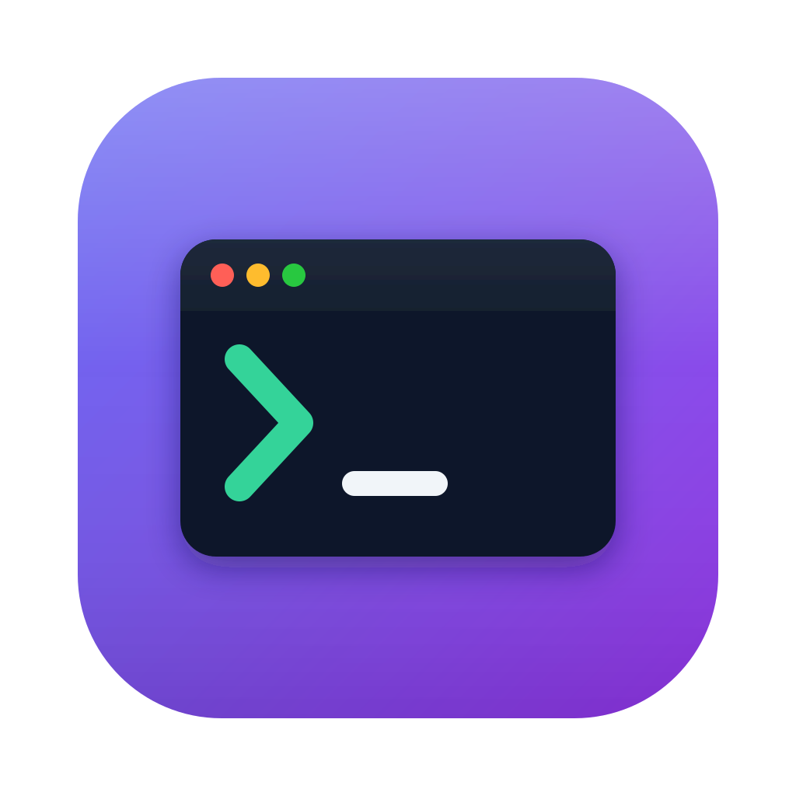

从 Finder 工具栏一键打开终端,直达你正在看的那个文件夹。经典 Go2Shell 的原生重写版,不捆绑任何运行时。
Go2Shell 做过的一切 —— 为现代 macOS 全部原生重写。
按住 ⌘ 把 app 拖到 Finder 工具栏,点一下就在前台窗口所在的文件夹打开终端。
右键任意文件夹 → Open Shell Here,精确落到那个目录。设置和退出也在同一个菜单里。
Terminal.app、iTerm2、Warp、Ghostty、WezTerm、Kitty、Alacritty —— 选一个默认项,还支持在已有窗口里开新标签。
cd 之后自动接一条命令 —— 直接进 vim .、激活 venv、跑 make,随你定义。
纯 Swift + AppKit/SwiftUI。没有 Electron、没有 WebView,常驻后台也轻若鸿毛。
按住 ⌥ 启动即打开设置窗口;工具栏按钮始终保持"一击开终端"的纯粹手感。
每一个手势,都对应一个可预期的动作。
| 操作 | 结果 |
|---|---|
| 点击工具栏按钮 / 双击 app | 在 Finder 前窗口所在目录打开终端 |
| 按住 ⌥ 启动 | 打开设置窗口 |
| 右键文件夹 → Open Shell Here | 在该文件夹打开终端 |
| 新标签模式设置 | iTerm2:原生标签 · Terminal.app:模拟 ⌘T(需辅助功能权限,失败时自动改为新窗口) |
| 右键 → Settings… / Quit Go2ShellNext | 打开设置 / 退出后台 app |
没有安装器,没有守护进程 —— 一个 app 加一个 Finder 扩展。
这是 Gatekeeper 拦截了 ad-hoc 签名,app 本身没有问题。右键 → 打开也无法绕过,请在终端执行一次:
xattr -cr /Applications/Go2ShellNext.app之后即可正常打开,无需再操作。
一条脚本搞定,只需要标准工具链 —— 不用 Node,不用 Rust。
git clone https://github.com/neekin/go2shellNext.git cd go2shellNext ./build.sh # → build/Go2ShellNext.app